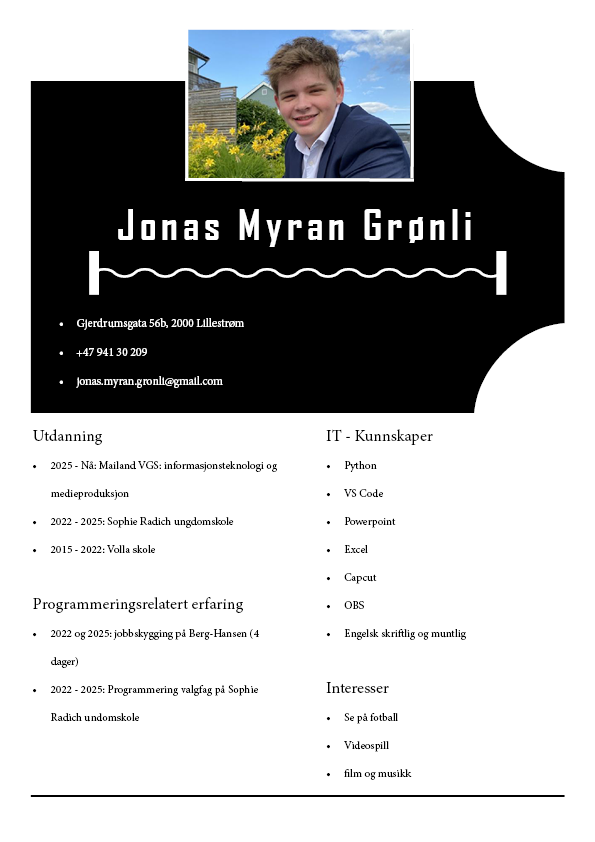

Klikk her for CV
Navn: Jonas Myran Grønli
Fødselsdato: 28.04.2009
Adresse: Gjerdrumsgata 56B, 2000 Lillestrøm
Telefon: 941 30 209
E-post: jonas.myran.gronli@gmail.com
Nasjonalitet: Norsk
Sivilstatus: Ugift
Jeg har erfaring både i medie og IT takket være Mailand VGS. Der har jeg lært å programmere, blant annet med html, css of javascript for å kunne lage nettsider som denne. I tillegg har jeg utdypet python kunnskapet mitt.
Jeg kan nå bruke flere adobe program, photoshop, indesign og illustrator for å nevne noen, til å lage et magasin, eller en logo.
Jeg kan skriftlig engelsk på samme nivå som en født i England, som er veldig verdifullt på internettet.